|
SPANISH AFRICA
TANGIER - RED CROSS AND AIR MAIL
According to Greek mythology Tangier, or Tingi, was
founded by the giant Anteus. Tingi is mentioned by Carthaginian travelers as
early as 500B.C. and is known to have been visited by Phoenician sailors
earlier than that. After the destruction of Carthage, Tingi was affiliated
with the Berber kingdom of Mauritania. It then became an autonomous state
under Roman protection, eventually becoming a Roman colony in the 3rd
century A.D. during the reign of Diocletian, and ending as the capital of
Mauritania Tingitana.
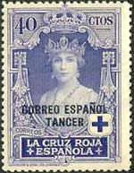 |
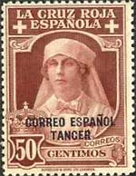 |
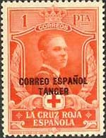 |
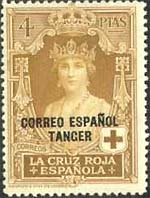 |
In the 5th century Vandals
conquered and occupied Tingi and from here swept across North Africa. A
century later Tingi became part of the Byzantine Empire and gradually fell
into obscurity until the city's capture by Moussa bin Nasser during the
first years of the 8th century. The city's inhabitants were converted
to Islam but many Berber tribes became disaffected and joined the schismatic
Kharijite rebellion and seized the port city in 739.
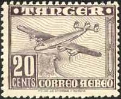 |
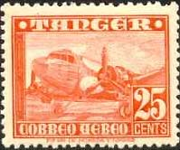 |
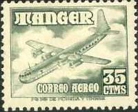 |
When Moulay Idris I established his Kingdom at Volubilis in 788, Tangier
became a focal point in the struggle between the Idrissid dynasty and the
Umayyads. This struggle continued until the Fatimid dynasty from Tunisia
assumed power in 958.
Tangier came under the successive sway of the Almoravides and Almohades,
after which the city fell under the influence of the Tunisian Hafsid dynasty
before passing into the hands of the Merinids.
By the 14th century Tangier became a major
Mediterranean port frequented by European trading vessels bringing cloth,
spices, metals and hunting birds in exchange for leather, wool, carpets,
cereals and sugar.
After an unsuccessful attempt to seize Tangier in 1437 the Portuguese
finally conquered and occupied the city in 1471, converting the great mosque
into a cathedral.
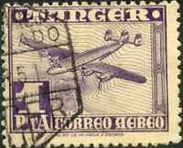 |
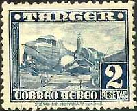 |
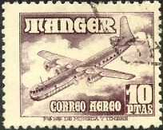 |
For nearly three centuries the town was passed back and forth between the
Spanish, Portuguese and finally the English, when it was given to Charles II
as part of the dowry from Catherine of Braganza. The English granted Tangier
a charter which made the city equal to English towns.
In 1679 Moulay Ismail made an unsuccessful attempt to
seize the town but maintained a crippling blockade which ultimately led to a
British retreat. However, the British destroyed the town and its port
facilities prior to their departure. Under Moulay Ismail the city was
reconstructed to some extent but the city gradually declined until by 1810
the population was no more than 5,000 (after
http://www.arab.net/morocco/tour/mo_tangier.html)
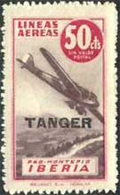 |
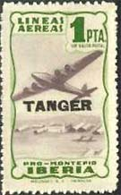 |
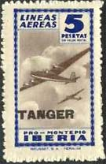 |
The
set shown on the first line was issued by Spain on Sept. 15, 1926. These are
semi-postal stamps, issued for the Red Cross. 40c Queen Victoria Eugenia,
50c Queen as a Nurse, 1 Pta Prince of Asturias, 4 Ptas Queen Victoria
Eugenia. The stamps were overprinted between 1937 and 1939.
The set displayed on
the lines 2 and 3 was issued between 1949 and 1950, Scott LC1-LC6. The
values of 25c, 35c, 1 Pta and 10 Ptas show a plane over shore, 25c a
twin-engine plane and 35c a passenger plane in flight.
Credits: many thanks to Tracy Barber
(USA) for the scans of all sets.
|